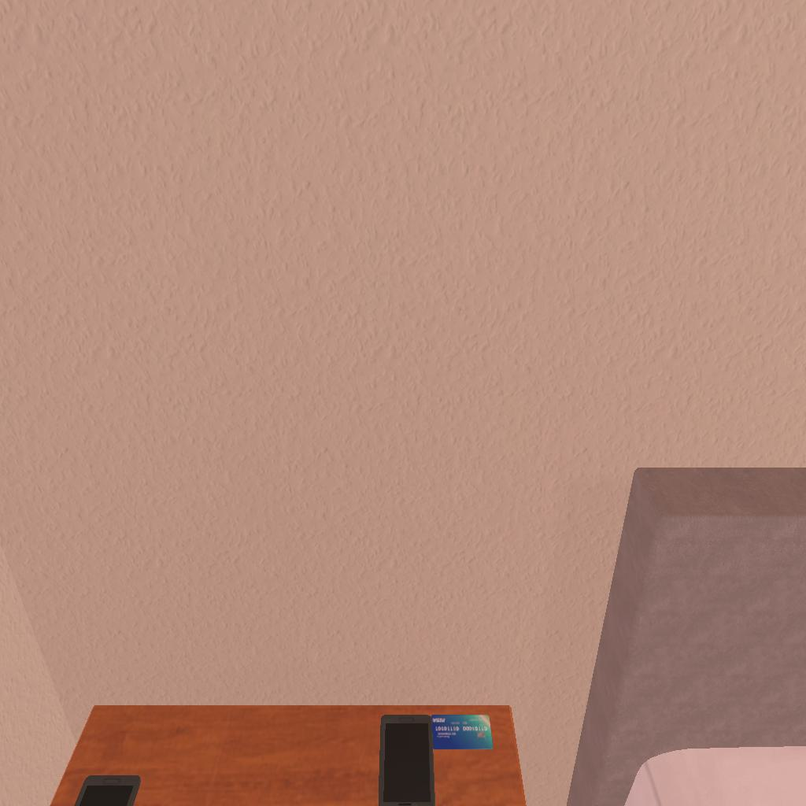

---------------------------------------------------------task: 6---------------------------------------------------------
--------------------------------------------------------------------------------------------------------------------------------------------------------------------
--------------------------------------------------------------------------------------------------------------------------------------------------------------------
Step:--------------------------------------------------------------------------2-------------------------------------------------------------------------------
----------------------------------------
VLM Prompt:
Image1:
Image2:
Image3:
**Instruction**
1. Analyze the provided images to identify all visible household objects and compare the difference between images (e.h. whether the object is opened or not and taken on hand or not), focusing on those relevant to the task description "put some cd on safe."
2. Use the analysis of images and the task hint "The agent must find an object of the desired type, pick it up, find the correct location to place it, and put it down there." to answer the question: what is the most reasonable action in the choices for the task description "put some cd on safe"?
3. Decide and write the answer using the template: The answer is: (i): , where i is the real number. If there is no desired object in images, search every place based on **Initial Observation** to find the object. And if no one is exactly correct, choose a similar answer.
**Initial Observation**
You are in the middle of a room. Looking quickly around you, you can see bed (1-2), dresser (1), sidetable (1-2), drawer (1-11), desk (1), garbagecan (1), safe (1)
**Answer Choices**
(1): go to bed 1
(2): go to dresser 1
(3): go to bed 2
(4): go to sidetable 1
(5): go to drawer 2
(6): go to sidetable 2
(7): go to drawer 3
(8): go to drawer 4
(9): go to desk 1
(10): go to garbagecan 1
(11): go to drawer 5
(12): go to drawer 6
(13): go to drawer 7
(14): go to drawer 8
(15): go to drawer 9
(16): go to drawer 10
(17): go to drawer 11
(18): go to safe 1
(19): open drawer 1
(20): close drawer 1
(21): examine drawer 1
**Answer**
Let's think step by step by following the instructions.
----------------------------------------
----------------------------------------
Original Response:
After analyzing the provided images, the visible household objects relevant to the task description "put some cd on safe" are:
- A safe
- A sidetable with drawers
- A phone and a credit card on the sidetable
Between Image 1 and Image 2, the sidetable drawer appears to be closed in Image 1 and opened in Image 2. Image 3 is identical to Image 2, suggesting no further action was taken between those shots. There is no visible CD in any of the images, so we must search every place based on the initial observation to find the CD.
Given the initial observation and task hint, the most logical action to accomplish the task of "put some cd on safe" would be to first find a CD. Since the images do not show any CD on the sidetable, the next reasonable action would be to search the drawers, as CDs are commonly stored in drawers.
The answer is: (19): open drawer 1
----------------------------------------
----------------------------------------
>>> Refine Original VLM Response and Get Pure Action: open drawer 1
----------------------------------------
-----------------------------------------------------------------
Running time: 9.497619152069092 seconds
Total Money: 2.648110000000001
-----------------------------------------------------------------
-----------------------------------------------------------------
Text Observation:You open the drawer 1. The drawer 1 is open. In it, you see a pillow 1, a cellphone 1, a cellphone 2, a creditcard 1, and a pencil 1.
-----------------------------------------------------------------
UNSUCCEED